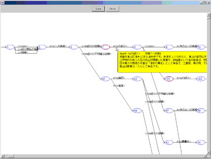
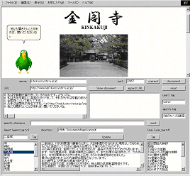

Japanese / English
We are developing conversational agents which guides tour spots. There are the following two research themes for these agents:
|

Figure 1 Dialogue Model
|
1. Incremental Learning Algorithms for Dialogue ModelsWe can not acquire a full dialogue model at first because it is hard to collect dialogues on a specific task. Therefore, a dialogue model needs to be learned evary time the number of example dialogue increases. However, re-learning for a little increase is very costful. Incremental learning algorithms are desirable for this situation.In this theme, we use a Probabilistic DFA (PDFA) for a dialogue model. We propose and evaluate incremental algorithms for learning PDFAs. |
|

Figure 2 WOZ Interface
|
2. Tour Guide Agent on Digital City by Wizard of Oz MethodWe develop a tour-guide agent which aquires the ability of conversation gradually through collecting example dialogues and learning dialogue models. The agent is constructed through the cycle of the following two steps:
In this theme, we construct the Kyoto tour-guide agent with the method. |
Masayuki OKAMOTO (Kyoto University) okamoto@kuis.kyoto-u.ac.jp
Nobutoshi YAMANAKA (Kyoto University) nobutosi@kuis.kyoto-u.ac.jp
dialog-agent@lab7.kuis.kyoto-u.ac.jp
Ishida Laboratory, Department of Social Informatics, Kyoto University
Internal Pages (password required)